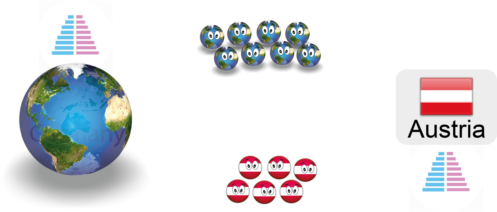

Quantifying, visualising and projecting global migration flows
Nikola Sander
Vienna, September 2015
Slides at nikolasander.com/vid-anniversary
Migration can be defined in many different ways

Two types of migration data:
flows & stocks


Abel & Sander (2014): Quantifying Global International Migration Flows. Science, vol. 343: 1520-1522.
Our estimates: 0.6% of the world's population move over 5-year periods

Circular migration plot
Segment length shows a region's migration volume in millions.
Flows have the same colour as their origin.
Hypothetical migration flows between Germany and Austria

.
There's no such thing as a net migrant!
From a net migration model to a bi-regional projection model
The global migration system
in 2005-10 and in 2055-60

* iterative proportional fitting was used to estimate flows from projected numbers of in-migrants and out-migrants
The global flow
of refugees in 2014
global-refugees.info